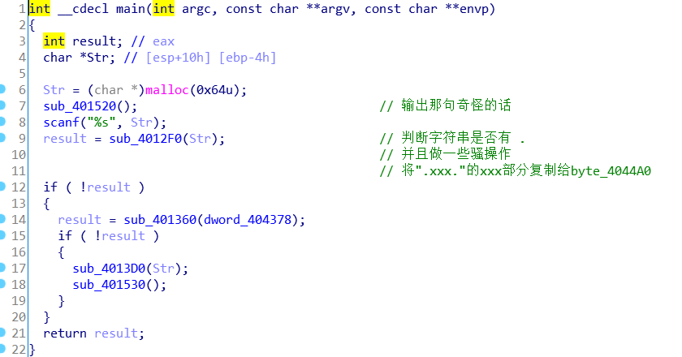
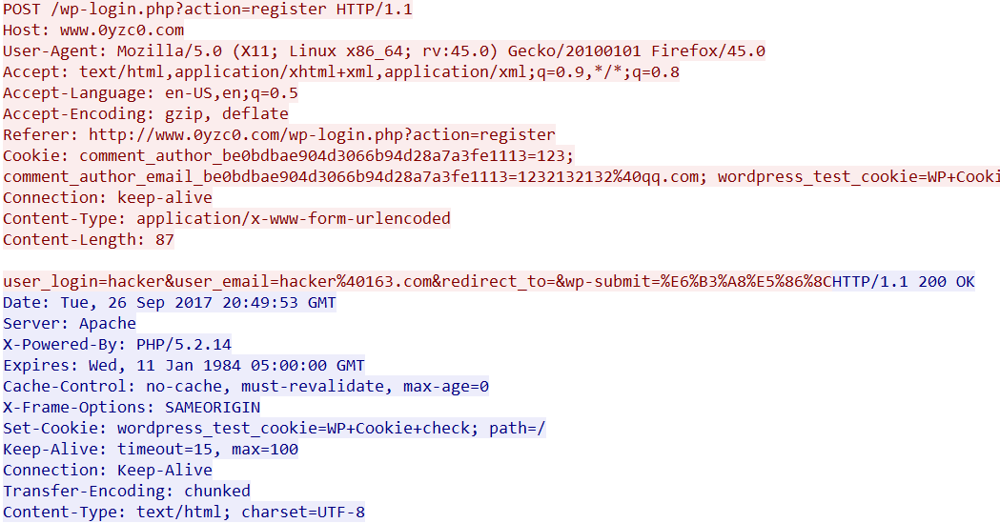
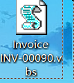
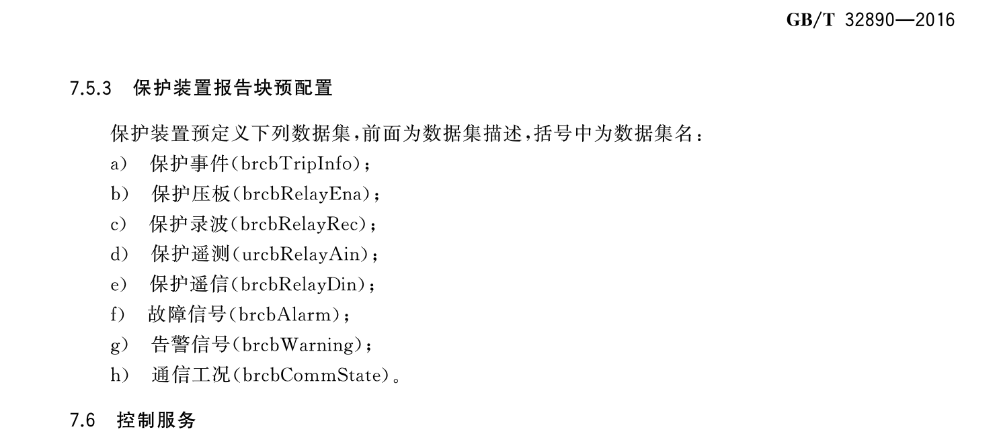
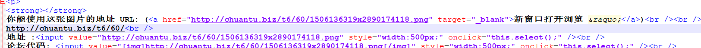
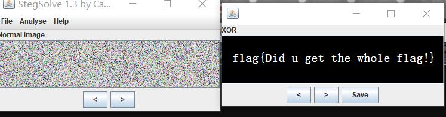

RE
Destroy 300
首先对混淆的部分进行了修复过后可以看清楚 main 函数的逻辑 去花的部分可以参见 plusls 的文章

正确的输入需要通过 4012F0，401360，4013D0，401530 四个函数的检测，简单说一下逻辑。
- 4012F0: 如果输入没有“.”则程序退出，否则根据“.”将输入分成三个部分
- 401360: 第一个点之前的输入转换成数字后需同时满足三个式子，此处可以得到无数个解
- 4013D0: 算法处理输入，将得到的结果存在内存中
- 401530: 检查 4013D0 的结果，将其与“5D4A4759477D4C6836723437316E3B6E717A787E747F”匹配
flag 脚本 1
2
3
4
5
6
7
8
9
10
11
12
13
14
15
16s = "5D4A4759477D4C6836723437316E3B6E717A787E747F"
s1 = '56451243'
flag = ''
for i in range(len(s)//2):
flag += chr(int(s[i*2:i*2 + 2], 16) - ord(s1[i % len(s1)]) + ord('0'))
s = "5D4A4759477D4C6836723437316E3B6E717A787E747F"
xdctf='XDCTF{'
for i in range(len(xdctf)):
print(int(s[i*2:i*2 + 2], 16) - ord(xdctf[i]))
for i in range(0, 10000):
a2 = int('56451' + str(i))
if a2 % 5 == 3 and a2 % 7 == 2 and a2 % 13 == 4:
print(a2)
flag: flag{He1l020l7klttys}
Web
web2 100
Python 代码在线编辑器 存在关键字过滤，可以使用 base64 编码绕过
列出当前目录文件：
exec("aW1wb3J0IG9zO3ByaW50IG9zLmxpc3RkaXIob3MuZ2V0Y3dkKCkpOw==".decode('base64'))
看到一堆搅屎文件，自身 root 权限，怀疑 flag 被搅屎棍删了 查看
.bash_history 翻到许多 python /codes/hash/a.py 1>/codes/hash/yes
2>/codes/hash/err 猜想可能可以在 /codes/hash/yes 里翻到前人 cat
flag.txt 的返回 结果在 codes 目录下直接找到了 flag
Misc
水表 100
下载得到两个 dump 文件 36 48，猜测文件名代表金额对应的卡内数据
对比发现第 25 行数据不同 1
236: 2400 0000 DBFF FFFF 7FA2 168F 0000 0000
48: 3000 0000 CFFF FFFF 7FA2 168F 0000 0000
flag: flag{649B}
邮箱 150
第 388 条 tcp 流是注册 WordPress 的流量，里面有正确的邮箱

flag: hacker@163.com
勒索病毒 150
在文件中解出一个 vb 脚本 但 64 位貌似不能跑 看源码像是个小游戏= =

找到执行vbs的程序即可
flag: wscript.exe
智能变电站 200
使用的协议标准是 IEC 61850-7-4，在TCP stream 13（27 也有） 去找国内这个标准的文档： http://c.gb688.cn/bzgk/gb/showGb?type=online&hcno=129E5B67BB92475A23F977633E69E255 ，搜索报告控制块发现【保护】部分包括以下，经过尝试 flag 是 brcbRelayDin

flag: {brcbRelayDin}
Crypto
基础为王 100
流量包里找到两个图片 异或即可


flag: flag{Did u get the whole flag!}
基础之Base64 200
base64 隐写
解密代码 1
2
3
4
5
6
7
8
9
10
11
12
13
14
15
16
17
18
19
20
21
22
23
24
25
26
27def get_base64_diff_value(s1, s2):
base64chars = 'ABCDEFGHIJKLMNOPQRSTUVWXYZabcdefghijklmnopqrstuvwxyz0123456789+/'
res = 0
for i in xrange(len(s2)):
if s1[i] != s2[i]:
return abs(base64chars.index(s1[i]) - base64chars.index(s2[i]))
return res
def solve_stego():
with open('2.txt', 'rb') as f: # 2.txt为原题目txt
file_lines = f.readlines()
bin_str = ''
for line in file_lines:
steg_line = line.replace('\n', '')
norm_line = line.replace('\n', '').decode('base64').encode('base64').replace('\n', '')
diff = get_base64_diff_value(steg_line, norm_line)
pads_num = steg_line.count('=')
if diff:
bin_str += bin(diff)[2:].zfill(pads_num * 2)
else:
bin_str += '0' * pads_num * 2
res_str = ''
for i in xrange(0, len(bin_str), 8):
res_str += chr(int(bin_str[i:i+8], 2))
print res_str
solve_stego()
flag: flag{8aseIsC0ol}